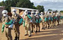
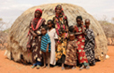
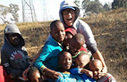
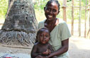

Stories of CDC's Work Around the World
 ShareCompartir
ShareCompartir
DREAMS Event Features Guest Speaker Oprah Winfrey
U.S. Ambassador Patrick Gaspard hosted an audience of young South African women on Friday for what may be a once-in-a-lifetime opportunity to meet global media leader and philanthropist Oprah Winfrey. Ms. Winfrey, who is in South Africa celebrating the sixth graduating class ...
Posted December 3, 2016
Sierra Leone (IDSR) (GHSA) in Action
Time is of the essence to prevent clusters of illness from turning into disease outbreaks. Public health workers can take action to prevent the spread of disease, and...
Posted December 23, 2016
Tanzania Surveillance (GHSA) in Action
Tanzania is filling in the gaps of its health facility-based disease surveillance system to rapidly detect outbreaks by leveraging existing local community structures. Recently...
Posted December 23, 2016
Liberia Workforce Development (FETP) in Action
FETP trains field epidemiologists around the world, giving them the skills to collect, analyze, and interpret data to make decisions that can save lives. To keep the world safe...
Posted December 23, 2016
India (AFI) Surveillance (GHSA) in Action
In Western Ghats and other similar regions in India, smaller, remote hospitals often have to either wait weeks for test results from larger district labs or send patients on...
Posted December 23, 2016
World AIDS Day Pre-Event in Kenya – A Celebration of Leadership. Commitment. Impact

Leadership was strongly demonstrated in Nairobi, Kenya on November 29th, 2016, when implementing partners came together to lead the planning and coordination efforts of...
Posted November 29, 2016
Kenyan FBOs Take On HIV/AIDS
When organizations are determined to join hands and work across lines of cultural and religious beliefs, the results are astounding...
Posted November 3, 2016
INSPIRE: Seven strategies for ending violence against children
At least a billion children suffer some form of violence each year, but violence against children is not an inevitable part of life. It is preventable...
Posted July 12, 2016
CDC-Mozambique FETPs Combat Yellow Fever in Angola
Just as FETP Resident Advisor (RA) Tim Doyle was leaving CDC-Mozambique on February 3, 2016 to go to South Africa as its new FETP RA, his plans changed...
Posted June 27, 2016
Tracking the Global Tobacco Epidemic Among Youth
Tobacco use is a leading preventable cause of morbidity and mortality worldwide with nearly 6 million deaths caused by tobacco use every year. Cigarette smoking is the most common form of tobacco use in most countries, and the majority of adult smokers initiate smoking prior to the age of 18...
Posted May 26, 2016
Disease Detectives Protect Children in Pakistan
When too few people are protected by vaccines, deadly illnesses can erupt and target the most vulnerable – especially children. Outbreaks of childhood diseases like measles, diphtheria, and pertussis are preventable with vaccines, but not everyone has easy access to get them. ...
Posted May 24, 2016
Vietnam: Connecting for Stronger Emergency Response
Vietnam is creating a network of EOCs to monitor disease transmission data in real time, bringing outbreak detection and response closer to the source. Each EOC in the network will act as a nerve center for epidemic intelligence, mobilizing responses to public health threats and coordinating with ministries in emergencies. Four interlinked regional EOCs will be able to communicate and share data directly with Vietnam’s national EOC and with international partners...
Posted May 17, 2016
PMI IRS Success in Mozambique
Set an ambitious goal. Collaborate with local leaders. Train. Prepare. Implement. Succeed. The words are easy to put on paper but it’s another thing altogether to make them work in real life. Especially in a place like Mozambique...
Posted May 9, 2016
Eliminating Lymphatic Filariasis in Haiti

“Commitment equals success.” Simple and direct as that is, the Division of Parasitic Diseases and Malaria’s Dr. Pat Lammie is convinced it’s the key to eliminating lymphatic filariasis (LF) in Haiti...
Posted May 9, 2016
CDC Expert at Forefront of Effort to Protect Infants from Syphilis and HIV
Mary Kamb, Associate Director for Global Activities in CDC’s National Center for HIV/AIDS Division of STD Prevention, found herself squarely in the middle of two historic moments earlier this year...
Posted May 9, 2016
Vietnam: Empowering Communities to Detect Potential Outbreaks Early
A parent hears rumors from other parents about several children bitten by a rabid dog. A teacher sees an unusually high number of children absent from school and hears that they all have similar symptoms. It could be a coincidence. It could be a local disease outbreak. Or it could be the first signs of an epidemic...
Posted May 3, 2016
Neighbors unite to fight Zika across the Americas

“Central America is unique in that everyone is close to each other. If there’s an emergency in Guatemala, it is likely that an outbreak in Honduras or El Salvador will soon follow,” says Luis Hernandez...
Posted April 29, 2016
Ghana: Quick Laboratory Action Helped Control a Meningitis Outbreak
Assisting with outbreaks usually requires travelling light. But sometimes it requires hauling heavy equipment across the world. When CDC experts were asked by Ghana to assist with a meningitis outbreak, they arrived lugging a PCR machine, an instrument used in a laboratory that can confirm disease diagnoses through molecular detection. The team had carried the machine all the way from their lab in Atlanta...
Posted April 14, 2016
CDC Global Immunization in the Field
The theme for this year’s World Immunization Week is “Closing the Immunization Gap” a slogan which challenges countries...
Posted April 27, 2016
"I Have a 16-Year–Old Boy who Just Came Back From Uganda and I Think He’s Dying…”
By the time Brett Becker was a sophomore in high school, he was already a seasoned traveler to Uganda (a country in East Africa), having visited multiple times to help build a community center for special-needs children...
Posted April 25, 2016
A Lifetime Committed to Eliminating One of the World’s Deadliest Disease

The quest to cure tuberculosis (TB) is more than 15,000 years old. On World TB Day each year, we celebrate the discovery of the tubercle baccilus by Robert Koch, MD, in 1882...
Posted March 22, 2016
Nigeria: How Being Prepared Avoided a Tragedy

Nigeria’s success in containing the Ebola outbreak to just 19 cases in two cities was due to surveillance and response systems already in place. A strong trained workforce through the Field Epidemiology Program (FETP) helped identify and isolate potential cases of Ebola. CDC responders joined 13 Nigerian FETP trainees and 40 FETP graduates to halt the outbreak within three generations of transmission. In total, the team identified 894 contacts, completed nearly 19,000 contact tracing home visits, and reached 26,000 households through a social mobilization strategy. They also established an Ebola treatment unit and trained Ebola caregivers in just two weeks. Also crucial was the Lagos Emergency Operations Center, which had been set up to address the polio outbreak in the country. The EOC housed experienced polio staff who had extensive experience in Nigeria, knew many of the key Ministry of Health officials, and understood the strengths and weaknesses of the nation’s health system...
Posted February 9, 2016
Mali: A Wider Net Catches Polio
A field epidemiology training program called FETP STEP, which was put in place to address the Ebola outbreak, turned out to also be key in thwarting a potentially devastating outbreak of polio. In September 2015, a 19-month-old child from Guinea crossed the border into Mali with a case of vaccine-derived polio. Drawing on his training, an FETP STEP graduate led surveillance and investigation in the affected district. Through contact tracing, he found that seven other children had been in contact with the child and would need close monitoring. CDC-trained personnel also worked with the Ministry of Health to launch an emergency vaccination campaign in Bamako and surrounding areas, and helped increase monitoring at the border...
Posted March 16, 2016
Cameroon: Global Health Security Effort Gives “Muscle Memory” In How to Fight Disease
Cameroon is taking lessons learned from previous outbreaks to shorten response times through their newly developed Emergency Operations Center, which serves as a role model for global health security success. In one year, experts reduced response time to a health emergency from 8 weeks to one week. When Cameroon’s EOC was activated for the first time in response to a cholera outbreak, it took more than eight weeks to get organized and respond. By the time their full resources were brought to bear on the outbreak, it was nearly over. In sharp contrast, when a Lassa fever outbreak occurred just one year later, that same team took only a week to mobilize and take action...
Posted March 9, 2016
India: Labs Rise to the Challenge
India is improving its ability to detect one of its most common killers: acute diarrheal disease. Epidemiologists, microbiologists, lab technicians, and healthcare staff have been trained and mentored on procedures for stool specimen collection, transport, laboratory testing, and reporting. In just two years, more than 30 outbreaks have been detected and reported in four pilot districts across Tamil Nadu and Gujarat; 2000 samples have been properly collected, transported, and tested. Clinical specimens were tested in 75% of those outbreaks, bringing results on par with some of the best standards in the world...
Posted February 9, 2016
DRC: Bridging the Gap During the Ebola Epidemic
During the Ebola epidemic, disease detectives from the Democratic Republic of Congo brought contact-tracing expertise to Guinea to help find and stop the disease. The DRC has its own history with Ebola, having faced one short-lived outbreak in 1976 and another in the mid-90s. When Ebola briefly returned again in the summer of 2014, a trained team of field epidemiologists helped swiftly put a stop to the outbreak, limiting it to 66 cases...
Posted February 10, 2016
Country of Georgia: Putting Data to Work
Georgia is the first country to take on the challenge of completely eliminating Hepatitis C (HCV) and they’re using a team of international disease detectives to find out how it’s spreading. Teams overcame language and navigation challenges, going door-to-door in remote areas to gather information. Survey results are already informing national strategy: Experts assumed that HCV in Georgia could be traced back to intravenous drug use, reusing syringes, or being previously incarcerated, but survey information indicates that transmission could also be associated with lack of infection control surrounding medical and dental procedures, and even tattoo parlors and manicure salons...
Posted February 10, 2016
Kazakhstan: Improving Laboratories One Step at a Time
As part of a large-scale project to modernize Kazakhstan’s outdated laboratories, the “stepwise” laboratory improvement process is producing immediate and measurable results. Over 15 months of stepwise training, five laboratories were transformed. Each now has a designated quality manager and biosafety officer who teach staff how to meet requirements and do their jobs better. Participating laboratories offer targeted training to other facilities within their region, spreading improvement grassroots-style, one facility at a time...
Posted February 10, 2016
The Importance of Folic Acid: Anifa's Story
Worldwide, more than 300,000 babies are born with serious birth defects of the brain and spine each year. Read Anifa's story and find out what CDC is doing to help...
Posted February 17, 2016
Thailand: Field Epidemiologists Fight Global Health Threats
FETP first took root outside of North America in Thailand as a partnership with the country’s Ministry of Health. In the last 35 years, Thailand’s FETP has helped tackle some of the most lethal public health threats in the region, including HIV, severe acute respiratory syndrome (SARS), botulism, malaria, and the 2009 influenza pandemic. FETP residents were instrumental in identifying high-risk populations for HIV infection in the early days of the AIDS epidemic in Thailand...
Posted February 10, 2016
Thailand: Stronger Labs Improve Detection
Welcoming people into a country without welcoming the spread of infectious diseases can be tricky. Thailand is watching for outbreaks along its borders, using advanced molecular detection and a network of laboratories to provide fast and accurate results on dengue, Zika, and other infectious diseases. In hospitals and clinics along the Thai border, staff from the Ministry of Health identify patients with fever, collect clinical information, transport and test samples, and provide results back to clinicians...
Posted February 10, 2016
Nigeria: How Being Prepared Avoided a Tragedy
Nigeria’s success in containing the Ebola outbreak to just 19 cases in two cities was due to surveillance and response systems already in place. A strong trained workforce through the Field Epidemiology Program (FETP) helped identify and isolate potential cases of Ebola. CDC responders joined 13 Nigerian FETP trainees and 40 FETP graduates to halt the outbreak within three generations of transmission. In total, the team identified 894 contacts, completed nearly 19,000 contact tracing home visits, and reached 26,000 households through a social mobilization strategy. They also established an Ebola treatment unit and trained Ebola caregivers in just two weeks. Also crucial was the Lagos Emergency Operations Center, which had been set up to address the polio outbreak in the country. The EOC housed experienced polio staff who had extensive experience in Nigeria, knew many of the key Ministry of Health officials, and understood the strengths and weaknesses of the nation’s health system...
Posted February 9, 2016
World Cancer Day
On February 4, CDC joins people, organizations, and government agencies around the world in exploring how everyone can help prevent and control cancer...
Posted February 4, 2016
CDC Joins Forces with White House, Other USG agencies to Launch National Plan to Combat Multidrug-Resistant TB in DC
CDC in partnership with other U.S. government agencies, public health stakeholders, and global partners joined the White House today to help launch the “National Action Plan for Combating Multidrug Resistant TB (MDR TB)” in Washington, DC...
Posted January 7, 2016
Take a Ten-Country Tour with Global Disease Detectives
Scarcely a week goes by without a grim reminder in the news of the deadly threat of infectious diseases. We don’t know what the next health threat will be, or when it will strike, or where. But we do know what is needed: people on the ground...
Posted December 14, 2015
An AIDS-free Future: CDC Helping Young Women Achieve Their DREAMS
When you meet Marlyne, you can sense that she has a strength and determination that belies her tender age. Like many 13-year-old girls in Kenya, she dreams of a better life for herself and her family, and she is willing to work hard to achieve her goals...
Posted November 25, 2015
Protecting the Power of Antibiotics: Lessons from Egypt
Consider this: Alexander Fleming discovered the first antibiotic – penicillin – in 1928, at a time when the world’s population was less than 1/3 of what it is today and commercial air travel was not yet commonplace...
Posted November 13, 2015
World Diabetes Day
Celebrate World Diabetes Day today and every day with a healthy eating plan you can follow for life...
Posted November 10, 2015
Enhancing HIV Care Delivery Systems to Address Noncommunicable Diseases
Hypertension, also known as high blood pressure, is the leading risk factor for stroke. We know that early detection and treatment of high blood pressure can reduce the risk of stroke by up to 40%...
Posted October 29, 2015
Partnering through PEPFAR to reach young women and girls
As a key partner of PEPFAR, CDC is also one of the lead agencies working to implement two powerful HIV initiatives aimed at reaching children, adolescents, and young women – the Accelerating Children’s HIV/AIDS Treatment program and the DREAMS initiative...
Posted October 8, 2015
Two Initiatives Worth Their Salt: Reducing Sodium Intake in Shandong, China and Philadelphia
Across the world, deaths due to cardiovascular diseases (CVDs), such as heart disease and stroke, are leading causes of death in adults 25 years of age and older...
Posted September 29, 2015
Promoting Sustainable and Integrated NCD Surveillance
Tobacco use is a leading cause of preventable death in the world and a risk factor for four major NCDs: cancer, cardiovascular disease, diabetes, and chronic respiratory diseases...
Posted August 19, 2015
TB, HIV, and Smoking: A Perfect Storm
A study authored by CDC and other TB experts in the August 2015 issue of The International Journal of Tuberculosis and Lung DiseaseExternal Web Site Icon identifies a critical missed opportunity in current TB, HIV, and TB-HIV programs....
Posted August 10, 2015
1-1-7 Ebola Call Center
At the 1-1-7 Ebola Call Center in Freetown, over 100 operators work in three shifts to answer questions about Sierra Leone’s outbreak 24 hours a day, 7 days a week...
Posted August 4, 2015
Cigarettes and Beyond: Testing Tobacco Products Around the World
Tobacco use causes 1 in 10 deaths among adults worldwide. The World Health Organization (WHO) Framework Convention on Tobacco Control (FCTC) was adopted in 2003 and fully implemented in 2005...
Posted July 30, 2015
Brazil Leads the Way to Integrating Tobacco Surveys into its National Surveillance System
{kind=link}
In 2008, Brazil implemented the Global Adult Tobacco Survey (GATS), a stand-alone, nationally representative household tobacco survey that uses a consistent, standardized protocol in participating countries...
Posted July 28, 2015
Improving Infection Prevention and Control in Sierra Leone
At the height of Sierra Leone’s Ebola outbreak, the walls of Connaught Hospital in Freetown were papered with tributes to dozens of staff members...
Posted July 20, 2015
CDC EIS Officer helps ambulance staff avoid Ebola infection in Sierra Leone
Everyone involved in the effort to get to zero Ebola cases knows a key to controlling the spread is the quick isolation...
Posted July 20, 2015
10 Years of International Health Regulations: Why They Matter
Ten years ago, in 2005, the countries of the world came together to put a new framework into place that would better prepare the world for public health emergencies...
Posted July 6, 2015
2015 SAFETP Graduates Setting the Standard
2 South Africa Field Epidemiology Training Programme residents recently completed their training and were awarded Master of Public Health Degrees at the April 2015 graduation...
Posted June 29, 2015
Uganda FETP Gets Crash Course in Disease Detection
On February 6, 2015, the Uganda Ministry of Health (MOH) received word of a “strange disease” that had killed one person, sickened dozens...
Posted June 15, 2015
Emergency Response and Recovery: Typhoon Haiyan, Philippines
In November 2013, Typhoon Haiyan struck the eastern side of the Philippine Islands, home to 11 million people...
Posted June 5, 2015
Strengthening Tobacco Control Surveillance in Pakistan: Experience from the Global Adult Tobacco Survey (GATS)
Worldwide, tobacco use is responsible for approximately 6 million deaths per year...
Posted May 26, 2015
CDC’s Response for Global Hypertension Control
High blood pressure, also known as hypertension, has become a global crisis and is estimated to cause 9 million preventable deaths worldwide...
Posted May 18, 2015
An Update on Global Partners Reaching the Ultimate Goal of Eliminating Epidemic Meningitis as a Public Health Concern in Africa
Worldwide, the largest burden of meningococcal meningitis (caused by Neisseria meningitidis) occurs in the sub-Saharan Africa meningitis belt...
Posted April 23, 2015
Ebola: Getting to Zero

Progress has been made in the year since CDC first responded to the Ebola outbreak in West Africa, but these efforts must continue until there are zero new cases....
Posted April 14, 2015
CDC Launches FETP-STEP in Cote d’Ivoire and Other High-risk Unaffected Countries in West Africa
Although significant progress has been made in controlling the spread of Ebola in West Africa, CDC remains vigilant in building surveillance capacity in the West Africa region...
Posted March 31, 2015
Improving TB/HIV Service Delivery and Health Outcomes in Ethiopia: A Profile of Dr. Beniam Feleke
Dr. Beniam Feleke has played an integral part in Ethiopia’s response to its TB and HIV epidemics....
Posted March 23, 2015
Scaling-Up TB Infection Control Practices in the Central America Region: A Profile of Dr. Diana Forno

Dr. Diana Forno is a physician and licensed surgeon in Guatemala and has extensive experience working....
Posted March 23, 2015
Ashley’s Story: How One Little Girl Survived Some Serious Birth Defects
During her first trimester of pregnancy, Kayte Thomas went in for a routine ultrasound. Her heart sunk when....
Posted March 2, 2015
Reducing Sodium Intake
The global burden of deaths due to cardiovascular diseases (CVDs) such as heart disease and stroke are a serious public health concern globally....
Posted February 23, 2015
Increasing Cervical Cancer Screening Coverage in the United States and Abroad
Cervical cancer is one of the leading causes of cancer deaths in women worldwide. In 2012, more than 500,000 new cases were diagnosed and more than 250,000 women died from cervical cancer globally....
Posted January 30, 2015
Elizabeth Glaser Pediatric AIDS Foundation (EGPAF)
EGPAF has been working in Malawi to reduce the rising number of HIV infections—using motorcycle couriers. Malawi currently has no national laboratory sample transportation network, and it is up to districts to organize the transportation of samples....
Posted January 22, 2015
Haiti Earthquake: Remembering help and hope 5 years on
January 12 marks five years since Haiti was hit by a devastating 7.0 magnitude earthquake. More than 200,000 lives were lost and another 2 million people were displaced when their homes were destroyed...
Posted January 9, 2015
Strengthening Capacity: Keeping it Simple and Realistic in India
India is a big, bustling, multidimensional place, full of achievements that are both impressive and surprising. India, for example, is the largest democracy in the world and has the world’s largest postal system, the longest road network, and the most English speakers of any country on Earth...
Posted December 10, 2014
Success in Cambodia: The Disappearance of Measles! (With Rubella Not Far Behind)
When something disappears, people tend to panic, except when what has gone missing is a dreaded disease like measles. Cambodia hasn’t reported a single confirmed case of measles since November of 2011, while its neighbors continue to face outbreaks, illness and death from this vaccine-preventable disease...
Posted October 29, 2014
Beginning Life Anew: An HIV Free Child
For all couples, the prospect of bringing a child into the world brings joy and excitement as well as concern about their future child’s health. But for couples in which one or both partners are living with HIV, health concerns make the decision to conceive a child a difficult one...
Posted November 24, 2014
CDC Supplements Ebola Assistance to Liberia, Sierra Leone, and Guinea by Preparing Neighboring Countries to Rapidly Detect and Contain Ebola
As of October 31, 2014, CDC has deployed 361 epidemiologists, public health analysts, communication specialists, and other staff to help control the spread of Ebola in heavily affected countries. In parallel effort, the Agency is shoring up defenses in countries that border Sierra Leone, Liberia, and Guinea...
Posted November 4, 2014
The effects of unregulated trade and consumption of dog meat on rabies control in Southeast Asia
Extensive evidence suggests unregulated transport of dogs as a food source can derail rabies control efforts. Studies in Southeast Asia have found approximately 2 out of every 100 dogs intended for consumption are rabid...
Posted September 22, 2014
Moving Haiti Closer to Rabies Control
Jacque was a 40-year-old carpenter who made furniture to support his family of five. They lived in a small two-room house in the mountains. One day Jacque started feeling bad and stayed home from work. He kept getting worse and then couldn't walk so his family called the witch doctor who performed several rituals...
Posted September 22, 2014
Rabies in Ethiopia and the initiated elimination project in North Gondar
The human-animal interface is accelerating, expanding, and becoming increasingly more consequential. Over the past three decades, approximately 75 percent of emerging human infectious diseases have been zoonotic...
Posted September 22, 2014
Rabies is a disease that has no boundaries!

As part of an Ethiopian rabies project sponsored by Ohio State University, I traveled and interviewed local residents in towns and villages about their general knowledge of this disease. Many had seen rabid dogs, known individuals who were bitten, and even had family members who died from it. “Be warned: these dogs won’t look like what you expect!”...
Posted September 22, 2014
CDC & Global Health Security: Partnership in Africa
Global health security is more important now than ever. New diseases are occurring and spreading, drug resistance is rising, and more laboratories are working with dangerous bacteria and viruses. Even though global travel and trade increase these risks, progress is being made to address these challenges through U.S.-Africa partnerships...
Posted August 1, 2014
Partnership between the Pakistan FELTP and the Pakistan Armed Forces to Improve Skills in Applied Epidemiology and Outbreak Response in Pakistan
In Pakistan, as with many countries around the world, when a natural disaster occurs, the armed forces are normally called upon to assist. Recent examples in Pakistan include the earthquake in Kashmir in 2005 which killed more than 75,000 persons and the devastating floods in 2010...
Posted July 24, 2014
Chikungunya: A new mosquito-borne disease hits the Western Hemisphere, including the United States
Health officials at the Centers for Disease Control and Prevention (CDC) and all across the Americas have been tracking the spread of the chikungunya (pronunciation: chik-en-gun-ye) virus since December 2013 when it was first discovered in the Caribbean on Saint Martin...
Posted July 14, 2014
Mass Gathering Preparedness - A Global Health Security Victory for All at World Cup in Brazil
Thirty-two teams are set to take their shot toward victory at the 2014 Fédération Internationale de Football AssociationExternal Web Site Icon (FIFA) World Cup this summer. Brazil is geared up to host more than three million fans from all corners of the world...
Posted June 13, 2014
Importance of Communication in Outbreak Response: Ebola
As the crowd at the U.S. Embassy in Conakry, Guinea was gathering in early April, Craig Manning decided to play a hunch, even though—on paper—the meeting could have been mistaken for yet another routine and unremarkable exercise....
Posted June 11, 2014
Train, Motivate, Mentor: Strengthening Immunization Systems in East Africa
The “clues” were everywhere. And in this case in rural South Sudan there were as many rumors as facts about an outbreak of yellow fever in Aweil, Northern Bahr el Ghazal State. So when Surveillance Officer David Deng began investigating, he followed a newly-learned approach that stressed discipline, thoroughness and data...
Posted May 21, 2014
The Beginning of the End of Malaria in Haiti?
“Test before treatment,” Jeanine Hyppolite repeats the words over and over like a mantra. “I was very impressed by that. It works.” Jeanine is standing in the Solino Health Center in the Haitian capital, Port au Prince, and she’s describing the effects of the national malaria program training she attended ...
Posted April 25, 2014
Dr. Adam L. Cohen nominated for prestigious Charles C. Shepard Science Award
U.S. Centers for Disease Control and Prevention (CDC) South Africa’s Influenza Program Director in the South Africa Regional Global Disease Detection Centre, Dr. Adam L. Cohen, was recently nominated for the prestigious Charles C. Shepard Science Award...
Posted April 8, 2014
SURVAC Helps Improve Disease Detection and Response in Central African Countries
Elisabeth Pukuta Simbu is a biologist at the national laboratory in the Democratic Republic of the Congo where she and her colleagues detect devastating vaccine preventable illnesses such as rotavirus diarrhea and bacterial meningitis....
Posted April 2, 2014
On the Path to Sustainability: Combination HIV Prevention and Surveillance and Control of Sexually Transmitted Infections among Key Populations in Central America
In Central America, the HIV/AIDS epidemic is concentrated with low prevalence among the general population, but high prevalence among certain sub-groups...
Posted March 31, 2014
Lymphatic filariasis: Komi’s Story
Komi began farming at the age of eleven. He always loved the land in his village of Pouda in the Doufelgou district of Togo, West Africa. He took pride in providing for his wife and five children...
Posted March 27, 2014
Success Stories: Disease Detectives in Ethiopia, Part 2
A strange illness was spreading throughout Tigray, the northern region of Ethiopia. The Ethiopia Ministry of Health and Ethiopia Health and Nutrition Research Institute (EHNRI) asked CDC and other partners to help them investigate...
Posted March 26, 2014
Success Stories: Disease Detectives in Ethiopia, Part 1
A strange new illness was spreading throughout Tigray, the northern region of Ethiopia. In this dry, mountainous area, people living in remote homes and villages were coming down with what appeared to be the same unknown disease...
Posted March 26, 2014
Baby Hope’s Battle With TB
In Kenya, an 8-month-old baby girl named Hope was very ill—she was losing weight and her mother, who was also ill, didn’t know what was wrong...
Posted March 24, 2014
Thinking outside the Box: Innovations in Preventing Hepatitis B at Birth
Babies born into this world deserve a shot at being healthy. One of the best ways to give babies a good, healthy start is to get them the vaccines they need, when they need them...
Posted March 12, 2014
Strength in Numbers: Nigeria & CDC Work to End Polio
The question seems so simple: How do you finish the job when success seems so close? It’s being asked right now by public health officials in Nigeria, along with partners from CDC...
Posted March 4, 2014
Vaccine Research Will Accelerate Eradication of Polio
{kind=link}
The 21st century has seen a multitude of public health victories. Among them is the elimination of wild polio virus (WPV) in over 100 countries worldwide, thanks to successful vaccination programs...
Posted February 7, 2014
Associate Professor Before 29 Years
One of the Centers for Disease Control and Prevention (CDC) South Africa’s own team, Dr Ehimario U. Igumbor, an epidemiologist in the Epidemiology and Strategic Information Branch, made the cover page of the December 2013 issue The Nigerian Voice ...
Posted February 6, 2014
The Importance of Folic Acid: Anifa’s Story
Anifa is an 18-month-old girl who was born with spina bifida, a serious birth defect of the spine. Like most children with spina bifida, Anifa is paralyzed and has no bowel or bladder control. She lives with her family in a village in Nigeria where there is no primary health center to help her.
Posted January 3, 2013
Seasonal Influenza: Austin's Story, the Call to Get Vaccinated, and Global Progress Toward Prevention
On a winter morning two years ago, a previously healthy, athletic 17-year-old boy named Austin Booth awoke feeling ill, but took some medicine and pushed through his day the best he could. The next morning he was coughing up blood; his mother called the doctor, who sent him immediately to the emergency room.
Posted December 12, 2013
Identifying risks and changing behavior protects the lives of village doctors in rural China
China has the second highest Tuberculosis (TB) burden in the world with 5.23 million TB patients; approximately 350,000 of these have multi-drug-resistant (MDR-TB). Many TB patients in China are low-income rural residents who often first seek medical care in village clinics.
Posted December 6, 2013
Making childbirth safer helps China, U.S. CDC, and WHO reduce the threat of chronic hepatitis B virus and neonatal and maternal tetanus
In 2012, the World Health organization recognized China for two major public health accomplishments. The nation exceeded the WHO Western Pacific Regional goal of reducing the prevalence of chronic hepatitis B virus infection among children less than five years of age and eliminated neonatal and maternal tetanus.
Posted December 6, 2013
Culturally appropriate care for a unique population living with HIV/AIDS in rural China
The Yi ethnic minority is one of the most ancient populations in China. Culturally and linguistically distinct from the Mandarin-speaking Han ethnic majority, the Yi have historically faced significant barriers to medical care and have the highest rate of HIV/AIDS among China’s 56 ethnic groups.
Posted December 6, 2013
Foodborne disease in China - Physician behavior change helps both patients and public health
In China, physicians often prescribe antibiotics without conducting proper laboratory tests. "Testing often does not give positive results and it takes time, so I would rather treat my patients rather than wait for nothing," said one physician from a general hospital in Guangdong.
Posted December 6, 2013
A new approach for Couples Testing and Counseling is adopted nationwide in China
Xaio Lin and Wang Kai participated in a male couples HIV counseling and testing program at Chengdu Tongle Gay Care Organization. The test results showed that Xiao Lin was HIV-positive and Wang Kai was HIV-negative.
Posted December 6, 2013
Discovering influenza disease and economic burden
Influenza is one of the leading causes of illness and death in children, and young children play a key role in the spread of influenza in their families, schools, and communities.
Posted December 6, 2013
One World, One Health - Studying the link between animal and human disease transmission in China
China is one of the few countries that has been affected by the Highly Pathogenic Avian Influenza H5N1 endemic, and U.S. CDC’s presence in China offers the two countries an opportunity to collaborate on research on this global health problem.
Posted December 6, 2013
Improving HIV Diagnosis and Linkage to Care: Point-of-Care Tests
While antiretroviral therapy is now more widely available in Kenya, expanding clinical and laboratory services and providing better linkage to care for those who test HIV positive is critical to ensuring that more people receive HIV care and treatment.
Posted November 27, 2013
CDC in Thailand: 30 years of partnership in improving health and preventing disease
CDC recently marked 30 years of collaboration with the Thailand Ministry of Public Health (MoPH). This partnership has created new disease prevention and intervention strategies that have saved lives and improved health in Thailand and across Southeast Asia and increased health security of the U.S.
Posted November 26, 2013
Sweetness in the South, Saltiness in the North, Freshness in the East, and Hotness in the West
Gao Yujuan doesn't suffer from hypertension but it does affect her life. Yujuan’s parents are among the 160 million people in China with hypertension. Hypertension is a major contributor to heart disease and stroke, both of which are leading causes of death in China.
Posted September 27, 2013
Fostering Ownership of Childhood Immunization Data in Democratic Republic of Congo
Imagine having to balance your check book to decide if you could afford to make a major purchase if you had no idea of how much money you have in your account or how much you’ve spent. The best you can do is guess. In order to effectively balance your check book and make your purchase, you need accurate information (data)...
Posted July 18, 2013
Lymphatic filariasis: Indumati’s story
Before becoming involved with one of India’s programs that help people with lymphatic filariasis (LF) manage their symptoms, Indumati was one of the millions of LF patients with little hope that her pain, social isolation, and disfigurement would ever improve...
Posted June 17, 2013
Defeating Diarrhea: CDC and Partners Tackle Causes and Consequences in Kenya and Beyond
“What if we lost 50 city buses full of children today?” asks Michael Beach, the associate director for healthy water in CDC’s National Center for Emerging and Zoonotic Infectious Diseases. “That’s 2,195 children—the number who die daily of diarrhea around the world. That’s more than die from AIDS, malaria, and measles combined...
Posted May 24, 2013
CDC and Partners Protect Haitian Children against Vaccine Preventable Diseases
Immunization is considered the first line of public health defense and one of the most efficient and cost-effective public health interventions in the world. CDC is working in Haiti to increase national vaccination coverage for all routine vaccines and introduce new vaccines to protect children from preventable diseases.
Posted May 14, 2013
CDC and global partners kick start new communications strategy to encourage polio vaccinations in Democratic Republic of Congo
While the Democratic Republic of Congo (DRC) had been one of the countries that had stopped polio transmission in the past, poor vaccination...
Posted November 26, 2012
Strengthening Laboratory Services and Systems in the Caribbean Region
A strong national public health laboratory system is essential for detecting and responding effectively to HIV and other diseases...
Posted September 13, 2012
Building to Last: CDC Partner Leaves Proud Legacy in South Africa
On a sweltering February day in East London (affectionately known as Buffalo City) in the Eastern Cape province of South Africa, representatives from the regional South African government...
Posted August 4, 2012
Strengthening the African Health Workforce
In response, CDC launched a four-year initiative, the African Health Profession Regulatory Collaborative for Nurses and Midwives (ARC), that builds the capacity of nursing and midwifery regulatory councils in east, central and southern Africa.
Posted September 13, 2012
Uganda Blood Transfusion Service Headquarters
In the early years of the global HIV/AIDS epidemic, a safe blood supply was a critical concern for stopping the transmission of HIV for developed and developing countries alike.
Posted April 17, 2012
Laboratory Accreditation Program to Strengthen Health Systems
On July 27, 2009, in Kigali, Rwanda, with critical support from CDC's Division of Global HIV/AIDS, 140 host government laboratory personnel, health experts and policymakers from 12 African countries...
Posted August 4, 2012
Public-Private Partnership Strengthens Global Laboratory Systems
Deficiencies in the health care systems in most countries supported by the U.S. President’s Emergency Plan for AIDS Relief (PEPFAR) are enormous, and no single entity...
Posted August 4, 2012
Improving Blood Safety in Uganda
In the early years of the global HIV/AIDS epidemic, a safe blood supply was a critical concern for stopping the transmission of HIV for developed and developing countries alike...
Posted August 4, 2012
Siyayinqoba: Beat It! Conquers Fear of HIV Testing
Siyayinqoba Beat It!, a South African magazine show produced by the Community Health Media Trust (CMT) discusses hard-hitting topics about people living with HIV...
Posted August 2, 2012
CDC Meets With African Countries to Discuss Influenza Surveillance
CDC influenza representatives met with experts from twenty-three African countries to discuss their influenza surveillance achievements. As a next step, the group is looking forward to publishing an article highlighting fifty years of influenza surveillance in Africa......
Posted February 15, 2012
PMTCT: A Winnable Battle in South Africa
At the 5th South African AIDS Conference in June in Durban, South Africa, South African and CDC researchers presented on new evidence that the country is winning the fight against the HIV and AIDS epidemic...
Posted December 5, 2011
Director of Center for Global Health visits CDC-Zambia
On October 31-November 2, 2011, Dr. Kevin De Cock, Director, Center for Global Health, visits CDC-Zambia offices to meet with Zambia Minister of Health, U.S. Ambassador in Zambia, and CDC partners in-country. As part of his visit, Dr. Kevin De Cock, presented “Global Health 2012” at Grand Rounds at the University Teaching Hospital in Lusaka, Zambia...
Posted November 6, 2011
Providing Treatment for Migrants in South Africa - Community AIDS Response works with the most needy at Johannesburg Central Methodist Church
The Johannesburg Central Methodist Church sits amid thriving businesses and skyscrapers in the city’s bustling downtown. The church is both a place of refuge and a place of controversy...
Posted October 6, 2011
SANBS South African Transfusion Medicine Training Center
In February 2010, South Africa’s blood safety services took a major step forward with the opening of the technologically advanced South African Transfusion Medicine Training Center in Johannesburg. Funded by PEPFAR through CDC South Africa, the training center features lecture rooms, video conferencing...
Posted October 6, 2011
Lillian and Baby Rose: An HIV-Positive Mother Gets Help From CDC
Lillian, a 20-year-old mom living in rural Nyanza province, first met Dr. Abraham Katana during her first antenatal visit at the Siaya District Hospital. She was five months pregnant and just learning she was HIV-positive...
Posted October 5, 2011
Passionate Volunteers Take HIV Prevention to Their Neighbors in Namibia
A blanket of yellow eshosholo flowers covers the hillside neighborhood where Elizabeth Eichas and her husband make their home. The flowers are a bright, hopeful reminder of Namibia’s long rainy season. From her hilltop home, Eichas, who is HIV positive, spreads a different kind of hope...
Posted September 22, 2011
Saving Lives and Protecting People in Nigeria
As a recent graduate of Kenya’s Field Epidemiology and Laboratory Training Program (FELTP), Dr. Nguku was sent to Nigeria when the first human case of influenza A H5N1 virus was reported in Africa in 2006. In Nigeria, he was part of a team that helped track down the cause of the outbreak...
Posted September 22, 2011
Addressing Noncommunicable Diseases in China
Global health is now facing a dramatic transition. For the first time in human history, around the world more people are overweight than underweight, and more deaths occur among adults than children...
Posted September 16, 2011
Improving the Lives of Children in Kenya
In April 2011, Everline, a resident of the Kibera community in Kenya, was approached by a community mobilizer. Talking with him was normal to her, but this time the information he had was different. He came to talk to her about a seasonal flu vaccine study that was being carried out by KEMRI/CDC...
Posted August 29, 2011
Using U.S. Strength to Make a Difference in the Lives of Children
When Zara Ahmed and her U.S. Government colleagues began reviewing high-priority needs to be included in Rwanda’s Global Health Initiative Strategy, they did not know they would end up developing an innovative partnership...
Posted August 16, 2011
Pediatric HIV Network Reaches Thai Citizens with a Message of Hope
In 2005, Nantikan, then eight years old, developed a rash. For many caregivers, a rash would not inspire panic, but Nantikan’s aunt and primary caregiver, Kulton, recognized its importance. “Nantikan’s sister died, then six months later her mother died, so we thought it would be important to have her tested,” said Kulton. “I thought she might have HIV.”
Posted August 16, 2011
Sierra Leone: A Symbol of a Healthier Future
Opening a laboratory is rarely accomplished in one year’s time. In a country like Sierra Leone, which is still recovering from a decade-long civil war, it is even more difficult. But over the past year, CDC, the Sierra Leone Ministry of Health, and a host of global health partners have managed to do just that...
Posted August 15, 2011
A New Model of Care for Children
In a small, brightly colored room, a young boy sits at a table, drawing a picture. A woman sits nearby, pointing out shapes in the drawing and asking the child questions. The situation would be familiar at nearly any daycare facility around the world. But in many hospitals in Thailand, the scene also now includes a new model of pediatric HIV counseling...
Posted August 15, 2011
A Pharmacist Motivated by Inspirational Women
Fredrick Ochenge moves quickly and efficiently around Tabitha clinic's small pharmacy, filling up bottles, counting out pills, and chatting happily with everyone he encounters. When he calls a patient's name, they are met at the dispensary window by his wide smile and a warm greeting, as he carefully explains each medication's use, dose, and precautions...
Posted August 11, 2011
A Promising New Career in the Slums of Kibera
It has been six years, but Kennedy Odero can still remember perfectly the day he first crossed paths with CDC-Kenya. 'I was attending a local church function, and I heard an announcement that the CDC was looking for people to train as community health workers,' recalls Odero. 'At the time, I had another job, but it was not utilizing my skills appropriately.' ...
Posted August 11, 2011
Coordinated Campaign Against Nodding Syndrome in Uganda
Since the early 1960s, there have been reports of a mysterious disease affecting children in Africa, which causes uncontrolled head nodding (particularly in the presence of food), seizure-like activity, and in many cases, death. This illness is referred to as “Nodding Syndrome” after its most notable symptom…
Posted June 24, 2011
The Snowball Effect—Battling Malaria on a Global Stage
In a district hospital in western Kenya, more than 200 mothers and children crowd into a small room, hoping to be seen by the hospital's one outpatient healthcare worker. Inside the hospital is an even bleaker scene. Two, three, or even four seriously ill children lie piled on a single hospital bed…
Posted June 22, 2011
From Epidemic to Elimination—Ending Epidemic Meningitis in Sub-Saharan Africa
"It takes a village to protect a village." For Dr. Thomas A. Clark, epidemiology lead for CDC's Meningitis and Vaccine Preventable Diseases Branch, these are words to live by, especially in Sub-Saharan Africa, which suffers from what he calls "the one-hundred-year-old problem" of meningitis. The region has long been hit by what he calls "explosive epidemics"…
Posted June 22, 2011
Improving Health for Kenya’s Refugees by Building Laboratory Capacity
Not far from the Somalia border in Kenya lies the town of Dadaab, home to over 300,000 refugees in what is the largest refugee camp in the world. Refugees travel long distances, often by foot, without adequate food, water, sanitation, or shelter…
Posted March 9, 2011
CDC and partners are “doggedly dedicated” to eradicating polio
The global effort to eradicate polio is the largest public health initiative in history. Since 1988, CDC has contributed to global efforts to eradicate the disease and strengthen the capacity of countries to control other deadly and debilitating childhood diseases. At the 126th Session of the Executive Board of the World Health Assembly in January 2010…
Posted March 8, 2011
One Woman, One Community, Many Gains
Jemima is a woman living with HIV in rural western Kenya. That, alone, does not make her unique. After all, rates of HIV in that region are among the highest in the world. Even so, Jemima set aside worries about her own infection and went to work. A go-getter, she founded a group in her community that offers emotional support and small loans to families touched by HIV…
Posted March 1, 2011
Laboratory Accreditation Program to Strengthen Health Systems
On July 27, 2009, in Kigali, Rwanda, with critical support from the CDC Global AIDS Program, 140 host government laboratory personnel, health experts and policymakers from 12 African countries launched the first-ever World Health Organization (WHO) AFRO -accreditation program…
Posted August 4, 2010
Public-Private Partnership Strengthens Global Laboratory Systems
Deficiencies in the health care systems in most countries supported by the President’s Emergency Plan for AIDS Relief (PEPFAR) are enormous, and no single entity – neither governmental and non-governmental organizations nor industry – can meet these challenges alone...
Posted August 4, 2010
Improving Blood Safety in Uganda
In the early years of the global HIV/AIDS epidemic, a safe blood supply was a critical concern for stopping the transmission of HIV for developed and developing countries alike. Over the years great strides have been made in improving blood safety, but it continues to be an ongoing challenge in developing countries...
Posted August 4, 2010
A Cautionary Tale: A Family's Ordeal with Malaria
Fatai and Hanifat Adisa and their baby Mariam moved from Nigeria to the United States 10 years ago...
Posted February 8, 2010
More Than Just 'Jet Lag'
Kelly Granger in Ghana with her djembe, a traditional Ghanian drum made from carved wood and goatskin...
Posted February 8, 2010
A Cautionary Tale: One Traveler's Ordeal with Severe Malaria

Mr. Ver Wys was returning home after spending three weeks in Haiti working for Friend Ships, a humanitarian group based at Port Mercy in Lake Charles...
Posted February 8, 2010
A Cautionary Tale: Pregnancy, Travel and Malaria
In June 2005, Mariama Jones was living in a comfortable house in Lawrenceville, Georgia, near Atlanta, with her husband Samuel, 10-year-old son Ahmed, and 2-year-old daughter Sonya...
Posted February 8, 2010
A Cautionary Tale: Pregnancy, Travel and Malaria
In June 2005, Mariama Jones was living in a comfortable house in Lawrenceville, Georgia, near Atlanta, with her husband Samuel, 10-year-old son Ahmed, and 2-year-old daughter Sonya...
Posted February 8, 2010
Malaria Visits a Child in Africa
The child in this story (Courtesy: The Ifakara Health Research and Development Centre and the Rufiji District Council Health Management Team, Tanzania)...
Posted February 8, 2010
A Cautionary Tale: The Risks of Unproven Antimalarials
Tom Miller has made several trips for missionary and medical purposes over the last 25 years to countries such as Kenya, Haiti, Peru and Russia...
Posted February 8, 2010
- Page last reviewed: January 26, 2017
- Page last updated: January 26, 2017
- Content source:
Global Health
Notice: Linking to a non-federal site does not constitute an endorsement by HHS, CDC or any of its employees of the sponsors or the information and products presented on the site.